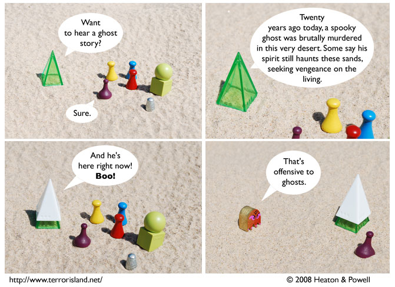

Strip #336
— Monday, August 4, 2008
Ghost stories told around the old pile of sand.
Notes, Thoughts, &c.
Ben’s Notes
I am in Michigan, and it turns out that I suffer from a rare condition of being unable to write my own comments while in Michigan. That’s ok, though, since I have to do more of the scripting on my own when Lewis is slacking off because he is moving apartments.
I wrote Ben’s comments today. -Lewis
Lewis’s Notes
I have no excuse for the lameness of my comments. If they were a horse, they’d obviously have to be shot.